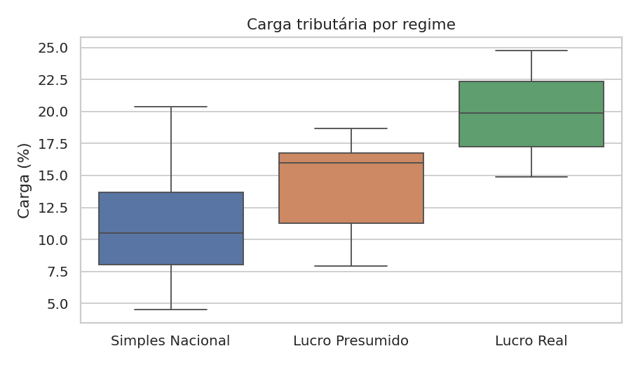

Sobre o projeto
Este projeto apresenta uma análise de um escritório de contabilidade, considerando carteira de clientes, faturamento, impostos por regime tributário, honorários e inadimplência. Os dados são fictícios, para preservar o sigilo contábil.
A proposta é demonstrar um fluxo completo: preparação dos dados, análise exploratória, indicadores, visualizações, dashboard interativo e publicação online.
Perguntas de negócio
- Qual a carga tributária de cada regime (Simples, Presumido e Real)?
- Como o faturamento e os impostos evoluem ao longo do tempo?
- Quais estados e setores concentram mais receita?
- Qual a inadimplência de honorários?
- Qual regime tributário compensa mais para cada empresa?
Indicadores analisados
Faturamento apuradoSoma do faturamento dos clientes.
Impostos apuradosTotal de impostos calculados.
Carga tributáriaImposto dividido pelo faturamento.
HonoráriosReceita do escritório.
InadimplênciaPercentual de honorários não pagos.
Tecnologias utilizadas
Algumas visualizações



Arquivos do projeto
Ver README Ver Notebook Baixar Base de Dados Repositório GitHubDashboard interativo
O dashboard foi desenvolvido com Streamlit e possui filtros, KPIs, gráficos, mapa, simulador tributário, consulta de CNPJ por API e upload de CSV.
Acessar Dashboard StreamlitAutor
Yago Baltazar Ferreira — Disciplina de Linguagem de Programação, professor Alexandre Neves Louzada.